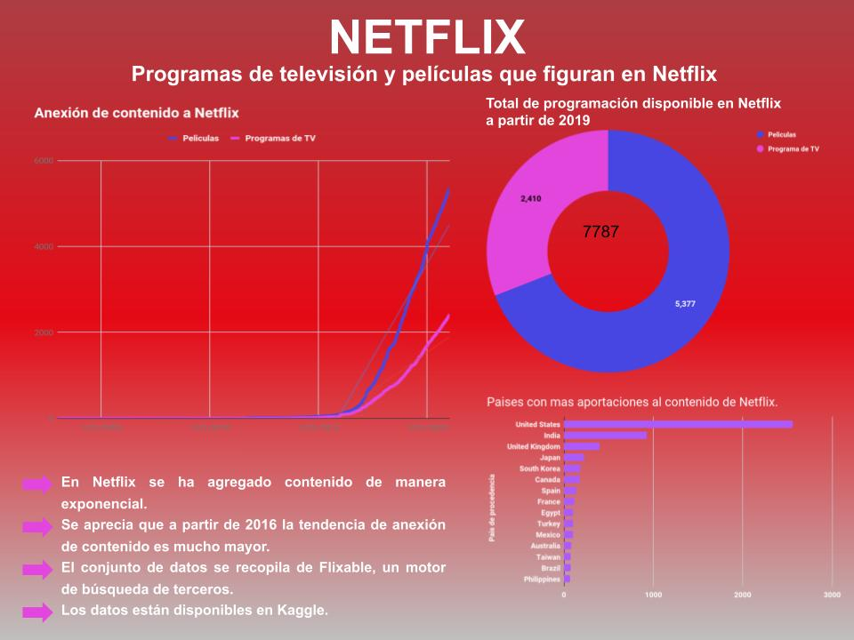

Herramientas de Visualización
Maestría en Análisis y Visualización de datos Masivos
En esta primera visualización se escogió un dataset que consta de programas de televisión y películas disponibles en Netflix a partir de 2019, el cual fue descargado de Kaggle en la url: https://www.kaggle.com/shivamb/netflix-shows.
El dataset en cuestión consta de 7,777 registros de programación agregada en Netflix y que está disponible a partir de 2019, los campos que contiene el dataset son (Kaggle,2021):
-
show_id:Identificación única para cada película, programa de televisión. -
type:Categoría para película o programa de televisión [movie | TV Show ]. -
title:Título de la película o programa de televisión. -
director:Director de la película. -
cast:Actores involucrados en la película o programa de TV. -
country:País donde la película o programa de TV fue producida. -
date_Added:Fecha en que se agregó en Netflix. -
release_year:Año de lanzamiento de la película o programa de TV. -
rating:Clasificación de la película o programa de TV. -
duration:Duración total en episodios o número de minutos. -
listed_in:define en qué clasificación se ha puesto la película o programa de TV, ej. TV Commedies, TV Drama, ids, etc. -
description:Breve descripción de la película o capítulo de programa de TV.
Como herramientas para presentar gráficamente se eligen varios programas gratuitos para presentar estos datos .

En esta primera visualización en D3 se parte del material expuesto en la UNIR en la unidad 4 y de los ejemplos vistos en clase.
Por otra parte en este primer acercamiento con D3 se continua con la informacion del dataset obtenido en la tarea 1 y ya descrito anteriormente, en la cual se trabaja una gráfica de barras horizontal apoyandonos de: HTML, css y js la gráfica tiene la intención de mostrar el numero de aportaciones por país al contenido de Netflix.
Técnicamente en el HTML de la gráfica hacemos referencia al sitio https://d3js.org/d3.v4.min.js, se trabaja la visualización dentro del tag SVG de HTML, dando como resultado un grafico como:
En construccion.
En construccion.
En construccion.